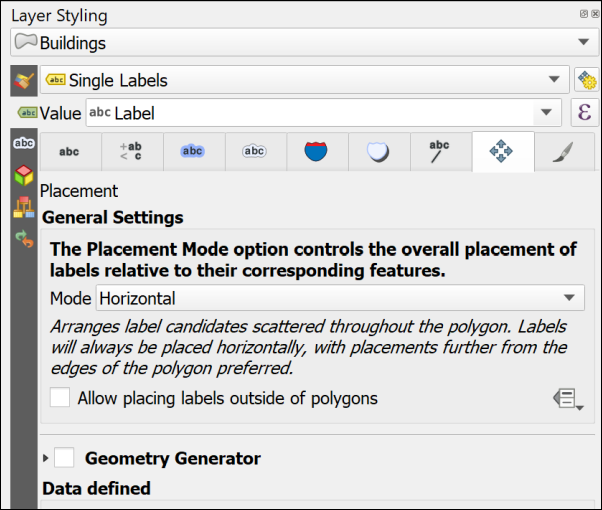

Creating data by digitising
The background to data for GIS will be covered in the lecture segment at the beginning of the class, and the presentation and any other supporting materials will be available in Minerva. The lecture segment should help you to understand why you are doing these exercises. If you still aren’t sure, please ask Clare.
Learning outcomes
When you have completed this section of the workbook you should be able to
- Set up storage for GIS data
- Use the tools in GIS to draw (digitise) your own data
- discuss the problems that can affect data for GIS
- suggest ways in which to minimize error and uncertainty in spatial data
Introduction
Digitising or tracing data manually in GIS involves having a background map which shows the locations that you wish to digitise, and then using the editing tools to draw vector polygons, lines and points. In this set of exercises you will produce a map of Chancellors Court in the University showing the outlines of the buildings, the paths, and the trees. You will already have a layer from the previous chapter which contains features such as sign posts, benches and rocks.
Even if you don’t actually need to digitise a map it is extremely useful to know how to set up your own feature classes and how to add features by editing. Sometimes you just need to outline your study area, or add a point to show where something specific is, or as input to one of the tools provided in Arc.
This is a very brief overview of the tools for digitising in QGIS as we are limited for time.
Vector and raster
If you feel that you are not clear about the difference between raster and vector GIS data it would be worth having a look at the video “Learn more about raster and vector map data” by the Ordnance Survey.
As you deal with more GIS data you’ll start to find it easier to spot which formats are raster and which are vector, but you need to be thinking about it already.
Obtaining the data
You should still have the British National Grid version of the project from the GPS chapter. You will be adding more data to this project.
If you no longer have this project you can start a new project from scratch instead, but you won’t have the gps points on the map when you have finished.
You will also need to
- download the
DigitiseDataQ.zipfile from Minerva - unzip the file to the same folder as the Chancellors Court map. You should end up with a folder called
getmapping_rgb_25cmwhich contains aerial imagery of the University1. The jpg file contains the image and the other files with it which have a similar name contain information that will locate it correctly within GIS.
Open the map project
- Start by opening the British National Grid version of your Chancellors Court map. (You may need to accept the transform when you do.)
- From the files you downloaded and unzipped add
se2934_rgb_250_01.jpgto your map using the Browser. (You may need to look in sub folders to find the file.) - Turn off the waypoints, location and OSM Monochrome layers so they don’t get in the way.
You should have an aerial view of Chancellors Court on your map. You will use this as a basis to digitise the buildings, paths and trees.
Setting up geopackage feature classes to store your data
The first thing you need to do is set up the storage for the data that you are about to create. You already have a GeoPackage in your project, and you will use that to store this new data too.
- If you don’t already have a geopackage or want to create a new one
- In the
Browserright-click on the folder in which you want to store the new geopackage or geopackage layer. It’s a good idea to use theProject Homefolder if you have already saved your map. New > GeoPackage- Give your new Geopackage a name in the
Databasefield - don’t delete the path to it, just change the name.
- In the
- If you already have a geopackage (which you should have in this case)
- In the
Browserright-click on the existing geopackage Create a New Layer or Table...- You won’t have the choice of changing the geopackage name here
- In the
- For both: Fill in
Table namewith a name which will remind you what that table contains - in this case call itBuildings - Choose a
Geometry type- in this casePolygon(note that once this is set for a feature class you can’t change it later) - There is a drop down for the CRS (unlabelled) either drop that down and select
Project CRS: EPSG:27700 - OSGB 1936 / British National Gridor use the button at the end of the line to search for the appropriate CRS. - If you want to add any fields to contain attributes you can do so now - it is also possible to add fields later
- Under
New Fieldtype in aName- in this caseLabel - Choose a
Type- for this layer chooseText data - Then type a
Maximum length- for now type in250- this is the maximum number of characters your label will be. - Then click on the
Add to Fields Listbutton to add the new field to the list. You can then add more fields if you need to, but we don’t at the moment.
- Under
- Once you’ve added all of the fields click on
OKto create the new feature class.
The new feature class should be created in your GeoPackage and added to your map. If it isn’t added to your map drag it there from the Browser now.
Creating two more feature classes
Use the same instructions to create two further feature classes in the same geopackage. Note that the Geometry type is different this time and remember that you must set these correctly or you have to create the feature classes again.
Create a
Linefeature class calledPaths. This doesn’t need any new fields.Create a
Pointfeature class calledTrees. Again, this doesn’t need any new fields.
Have a look at the new layers in your geopackage using the Browser. Note that the icons next to the layers show you what the Geometry type is.

Digitising in QGIS
You should already have an aerial view as a background for your map. For these exercises you be digitising polygons, lines and points by tracing over features on this view.
Before starting to digitise check that you have the Digitising Toolbar open.
View > Toolbars- Check that there is a tick next to
Digitising Toolbar
The toolbar should look something like this image at the moment. The only button available is Toggle Editing.
Digitising polygons
The Buildings feature class has a geometry type of Polygon, so this will hold closed shapes. We’ll start by digitising polygons, but lines and points are actually very similar.
- Start by selecting the
Buildingslayer in the Layers panel - Either right-click on the layer and click on
Toggle Editingor click theToggle Editingbutton on the Digitising toolbar.
You should have more buttons available on the Digitising toolbar now.
- The button that I’ve highlighted is
Add Polygon Feature. Click on this so that you are ready to start tracing.
We’ll digitise the School of Earth and Environment (SEE) building by drawing around the outline on the aerial photograph. SEE is the building to the north of Chancellors Court2.
- Left-click on one corner of the SEE building, then on the next. Keep left-clicking until you have outlined the building. You can zoom in and out and pan as necessary (to pan easily hold down the mouse wheel and drag the map).
- Each click creates a
vertexor node. - If you want to delete the previous vertex that you placed because it’s not right just press the
DeleteorBackspacekeys on your keyboard. - If you’re not happy with the whole shape clicking on
Escwill get rid of it completely. - When you have placed a vertex on each corner of the building
right-clickto finish editing.
Depending on the settings in your installation of QGIS you should find that a Features Attributes window opens. This gives you an opportunity to add attributes to your table.
- The buildings feature class has a
Labelattribute. Fill that in now with the name of the building -School of Earth and Environment. - The
fid(or Feature ID) is generated automatically so don’t touch that. - Click
OK. - To save your new feature to the geopackage make sure that you click on the
Save Layer Editsbutton on the Digitising toolbar
Your new feature should appear as a solid colour on your map.
Continue on to digitise the buildings to the east, west and south of Chancellors Court. The map below shows the names of the buildings for you to add.
- When you have finished digitising and have saved your edits click on the
Toggle Editingbutton again to finish.
Styling your layer
The previous chapter gave you instructions for styling your point layer. Use those instructions again to style your layer in a way that you think is suitable for your data. For example buildings are often styled as a pale brown colour.
The original instructions apply to point symbols, polygons and lines are styled in a very similar way, so just have a go and see what you come up with.
Transparency
It can be useful to make your layers transparent. As you draw your building polygons you’ll gradually be covering up the layers underneath and it can be useful to see through the top layers.
- Click on the
Buildingslayer in the Layers pane - Then click on the button at top left of the Layers pane to
Open the Layer Styling Panel - The layer styling panel should open to the right of your map.
- Click on the
Symbologytab on the left then go down to theLayer Renderingheading and drop it down using the little black arrow on the left. - Use the
Opacityslider to change the opacity or transparency of your layer. For example, slide it to about70%
Set the opacity so that you can see through your building polgons to the aerial imagery below.
Data quality
Think about data quality issues
Stop and think about the digitising you have just done. Can you think of any potential issues with the data that you have created in this way?
What scale did you digitise at? What effect will this have on the amount of detail that you included? What recommendation would you make about viewing the data on the map?
How accurate were you when you were placing the vertices on the corners of the buildings?
How clear were the edges of the building that you were digitising? What did you do when the edges were unclear, e.g. because of overlapping trees. What about shadows?
Editing features
If you want to edit a polygon or line to change it once you have created it you can.
- Click
Toggle Editon the toolbar (if you aren’t already editing) - Click on the
Vertex toolon the digitising toolbar. - Then right-click on the feature that you want to edit. The feature’s vertices will become visible as small red circles or squares.
- Left-click on one of the vertices and you will be able to move it around.
- When the vertex is in the position that you want it just left-click again.
- When you’ve finished editing right-click on the feature again to stop using the vertex tool.
- Don’t forget to click on
Save Layer Edits - When you have done all of your edits click
Toggle Editagain to stop editing.
Deleting features
If you want to delete a feature completely you can.
- Click
Toggle Editon the toolbar (if you aren’t already editing) - Look for
Select Features by area or single clickbutton on the toolbars (highlighted on the image of the Attributes toolbar below)
- Click on the feature that you want to delete - it should become highlighted in bright yellow
- Press
Deleteon your keyboard - Don’t forget to click on
Save Layer Edits - When you have done all of your edits click
Toggle Editagain to stop editing.
Labelling features
As you added features to your feature class you also added the Label attribute. You can now use this to label the features on your map.
- Click on the
Buildingslayer in the Layers pane - Then click on the button at top left of the Layers pane to
Open the Layer Styling Panelif it isn’t already open. - The layer styling panel should open to the right of your map.
- Click on the
Labeltab on the left. At the moment it will just sayNo labels. - Drop down where it says
No labelsand selectSingle labels
At this stage QGIS usually just labels your features with the first field in the feature class, which at the moment is fid. This isn’t very useful so the first thing you need to do is select the correct field.
- Next to
Valuedrop down the choices and select theLabelfield.
Immediately the building names that you added should appear on your map on top of the correct buildings.
The default fonts, colours and placements are not always what you want. In fact, usually just accepting the defaults is not a good idea.
- Use the settings on the first of the tabs (Text) to change the font, font size and colour
- Click on the
Placementtab and click on the button next toHorizontal (slow). This should move your labels within the polygon shapes.

Feel free to try out the properties in the other tabs too. There are lots of choices to help you make your labels clear and informative.

Digitising Line features
Digitising line features is very similar to digitising polygons, except that you don’t have to finish where you started.
You should already have a Paths layer in your Layer panel. If you haven’t then drag it across from the geopackage.
Some of the paths on this map are curved rather than straight. The easiest way of drawing curved lines in QGIS is to click more often. On tight curves you do have to click a lot to make the line look curved. There are more advanced editing tools which would help, but this is only a quick overview so you can explore them if you want to, but this way of drawing is fine for now.
- Select the Paths layer, toggle editing and click on the
Add line featurebutton - Add lines for the paths across Chancellors Court. You don’t need to add any labels for this layer.
- Save your edits and toggle editing off.
Again, think about the problems that you encounter as you edit. Do you draw the edges of the paths, or just the centre line? How can you be sure of what happens underneath trees? How easy is it to be accurate with the drawing tools? Think about the implications for future use of the map at different scales.
Digitising Point features
Digitising point features is very similar to digitising polygons, except that you only have to click once for each point.
You should already have a Trees layer in your Layer panel. If you haven’t then drag it across from the geopackage.
- Select the Trees layer, toggle editing and click on the
Add point featurebutton - Add a point for each tree in Chancellors Court. You don’t need to add any labels for this layer.
- Save your edits and toggle editing off.
Again, think about the problems that you encounter as you edit. How easy is it to decide where you should add a point to represent a tree? How easy is it to be accurate with the drawing tools? Think about the implications for future use of the map at different scales.
Finally
Finish digitising the buildings around Chancellors Court, the paths across it, and the trees. Check that all of the layers that you have created - the points, lines and polygons, have been symbolised appropriately and are labelled where necesary.
- Turn off the Aerial image by unticking the box next to it in the Layers panel
- If you want to, turn the symbolised waypoints layer back on
- Make sure that all of the features on your digitised layers are visible in the map window.
You should export your map from QGIS as an image and upload it to your GIS Portfolio. If you upload it within a week of the class I will give you feedback on your work.
- When you are happy with your map go to
Project > Import / Export > Export Map to Image - In the
Save Map as Imagedialog set the extent by clicking on theMap Canvas Extentbutton - Click on
Save
In a later chapter you’ll find out how to create a full map layout with a key, scale bar, measured grid etc and print or export that properly, but for now this is fine and will enable me to give you feedback on your use of the tools you’ve been introduced to today.
In the next chapter you’ll be working on the North Wales map and you won’t need this Chancellors Court map again.
Further information and suggested reading
Many of the books in the reading list3 have a general introduction to GIS which explain what it is and how it is used. Suggestions include the following:
- Chapter 5, Data input and editing in Heywood, I., Cornelius, S. and Carver, S. (2011), pp.135-173 covers the background to a variety of ways of inputting data to GIS and discusses data quality issues.
- Chapter 8, Data Collection in Longley, P.A. et al. (2015), pp.173 onwards. Again this chapter covers the background to a variety of ways of collecting data and inputting it to GIS. Section 8.3.2 from page 183 covers Vector Data Capture, or digitising.
The QGIS Documentation has a chapter on the techniques of Editing which covers much more than we have been able to cover here.
The information about Digitising an existing layer covers the topics in this chapter, but there is plenty more there.
There are a lot of videos on YouTube which may help you. Try searching for Digitising QGIS.
-
This data was downloaded from Aerial Digimap. ↩
-
If you’ve lost Chancellors Court in your map remember that you have the
LocationBNGlayer in your map from the previous chapter. You canZoom to Layeron that to get back to the right area. ↩ -
The reading list is available in Minerva and from the library (search for the number of this module). ↩